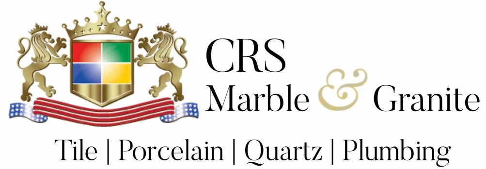
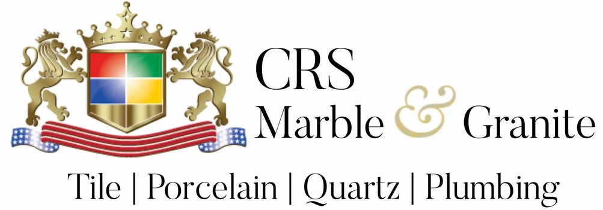

GRANITEZINAC
Crafting beautiful spaces with care, quality, and family values
-Granite Zinac-

Who is
Granite Zinac?
Welcome to our family-run granite business! With nearly five years of experience, we specialize in kitchens, bathrooms, bar tops, and outdoor spaces.
We’re passionate about delivering quality craftsmanship and making your vision a reality. Our hardworking team takes pride in every project, ensuring care, precision, and your satisfaction every step of the way.
Let’s create something amazing together!
Our Process
Our estimate process ensures you get a fair and accurate quote.
We start by visiting your location to take precise measurements and discuss your vision, including color and design.
For a personal touch, we recommend visiting slab yards to select your stone.
Once chosen, we provide a detailed, customized estimate.
 


2. After Choosing the stone and once your happy with the price we next will template your kitchen to ready for the fabrication
3. After the stones are delivered, we move into the fabrication stage.
Edges are precisely cut and polished to your liking, whether you prefer a clean flat polish or a polished broken edge for a stylish finish.
4. The final step for your dream kitchen.
In our Installation we make sure the countertops are adjusted and detailed to the best of our abilities.
Already have stone counter-tops?
And require some Care?
No problem we offer other services!